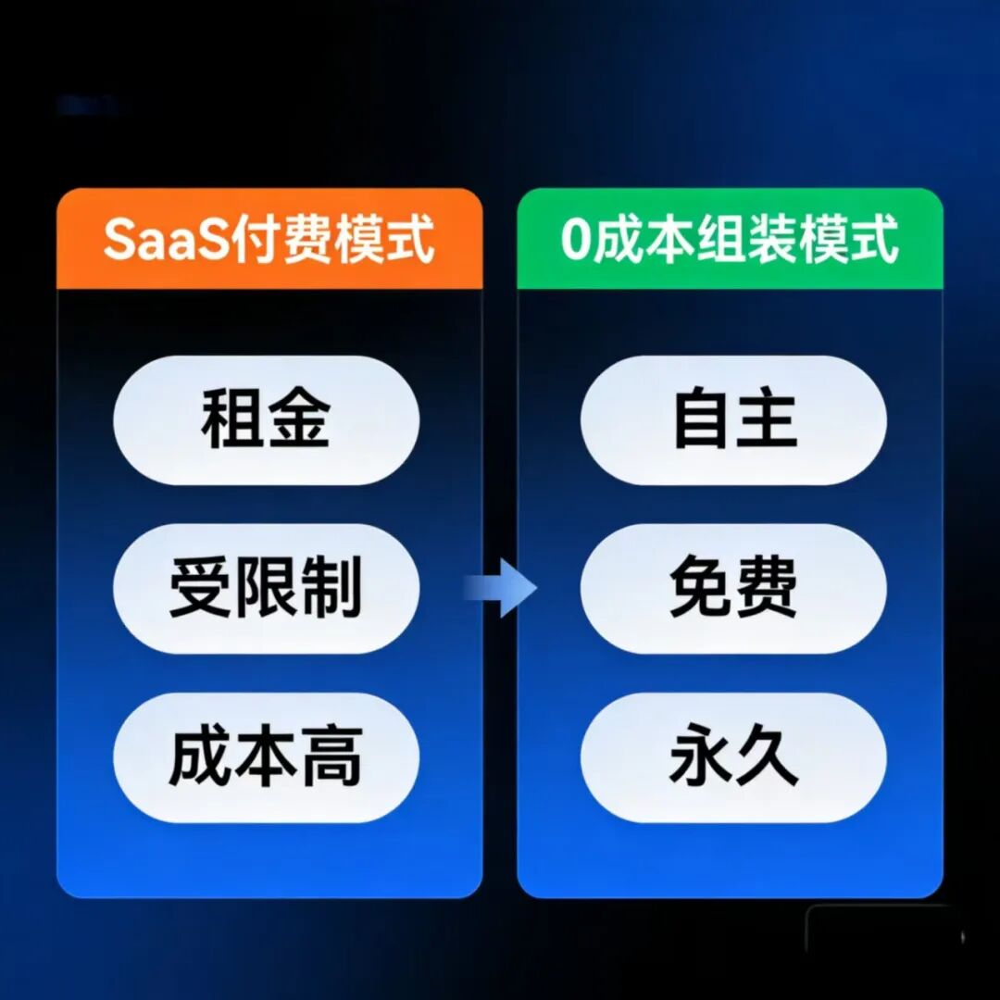
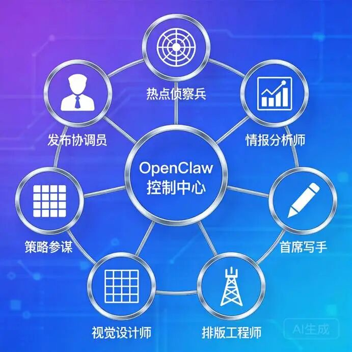

我是老A。5年大厂，3年自媒体。只教普通人能学会的AI写作和OpenClaw自动化，不用你会编程，不用你懂技术，看完就能用。 |
如果你还在为各种AI工具的会员费头疼，觉得搞智能体一定很贵很复杂，那你完全想错了。
真正的机会，在于让曾经昂贵的高级生产力，变得零成本、一键可得。
今天，我给你一套清晰、可落地的开源组装方案：用OpenClaw作为控制中心，从全球开源仓库里调用7个核心技能，打造一个完全属于你的“AI自媒体战队”。
从此，你的内容生产，从「手动付费模式」切换到「自动开源模式」。
💰 成本真相：从“持续付费”到“0成本组装”
在动手前，我们先看清现实。做自媒体，你通常只有两条路：
🅰️ 方案A：SaaS工具全家桶（月均花费 ≥ 300元）
这是大多数人的选择，也是隐形成本最高的路：
•写作：某AI写作会员，50-100元/月
•配图：某设计平台会员，30-50元/月
•排版：某排版工具会员，20-30元/月
•多平台管理：某发布工具，100元+/月
核心痛点：数据分散在各个平台，风格无法统一，功能受限制，月月续费如同交租，一旦停用，所有依赖它的流程瞬间瘫痪。
🅱️ 方案B：0成本组装智能体（组装免费，运行极低成本）
这是高阶玩家的路径，组装过程本身几乎0成本，长期运行成本极低：
•核心框架（免费）：OpenClaw本身开源免费，它就是你的一站式控制台。
•思维能力（极低成本/免费）：接入网上丰富的免费大模型资源。例如：
￮NVIDIA NIM 提供的众多高性能开源模型API端点。
￮OpenRouter、Together AI 等聚合平台上的免费额度或廉价模型。这意味着，驱动你智能体“思考”的燃料，成本极低。
•功能手脚（完全免费）：技能全部来自开源世界。
￮ClawHub：OpenClaw官方技能市场，技能一键安装。
￮GitHub：全球最大的开源仓库，搜索OpenClaw skill、AI agent tool等关键词，海量免费技能任你取用。
📊 对比结果
•SaaS路线：你是租客，每月交租，受制于房东（平台）的规则和价格。
•0成本组装路线：你是业主，自己拥有土地（框架）和图纸（逻辑），建筑材料（技能）免费从开源社区获取，建筑工人（大模型）的工资也极低。组装免费，永久自主，边际成本趋近于零。

🦾 你的“AI战队”：7个特种兵与他们的实战装备
你的战队需要7个专业的特种兵。以下是你可以在 ClawHub官方市场或GitHub开源社区中找到并安装的现成技能，全部免费开源。
序号 | 角色 | 定位 | 能力 |
1 | 热点侦察兵 | 情报官 | 监控热榜 |
2 | 情报分析师 | 解码器 | 拆爆文 |
3 | 策略参谋 | 参谋长 | 做规划 |
4 | 首席写手 | 核心 | 写文案 |
5 | 视觉设计师 | 美编 | 做配图 |
6 | 排版工程师 | 格式工 | 做排版 |
7 | 发布协调员 | 执行官 | 发文章 |
🏗️ 组装实战：在OpenClaw中配置你的智能体指挥官
现在，将7个特种兵组装起来，听一个大脑指挥：

1.创建智能体：在OpenClaw中点击“创建智能体”。
2.配置免费“大脑”：在模型设置中，填入你从 NVIDIA API 或 OpenRouter 获得的免费模型API密钥和端点。
3.输入指挥逻辑（系统指令）：这是灵魂，直接复制：
Plain Text 所有产出必须严格遵循我知识库中的文风和个人案例，杜绝编造。 |
4.连接所有技能：在智能体的“技能/工具”配置栏，将你安装好的7个技能全部添加进来。
5.绑定知识库：连接你那个包含了自己所有文风和案例的“个人知识库”。
✅ 完成！一个由开源生态驱动、听你号令的AI内容军团，已经就位。
⚡ 你的日常，从此被重构
模式 | 成本 | 耗时 | 工作内容 |
过去（付费打工模式） | 月付300+ | 4小时/篇 | 多软件切换、手动搬运、为工具打工 |
现在（开源指挥模式） | 近乎0成本 | 30分钟/篇 | 输入指令→审核内容→点击发布 |
🎯 日常流程示例：
•上午9:00：在OpenClaw对话框输入：“追踪今天‘个人IP’方面的热点，并写一篇短文。”
•上午9:20：收到飞书通知：“报告，基于热点‘XXX’，短文《XXX》已完成，已由视觉设计师配图，经排版工程师优化，并存于公众号草稿箱。请审核。”
•你的工作：花15分钟注入个人最新的洞察和温度，点击发布。
你从所有工具的付费用户，变成了一整套自动化系统的拥有者和指挥官。
🚩 关键行动指南
🔍 技能搜索技巧
使用上文提供的具体技能名称（如TrendRadar）在ClawHub或GitHub搜索，按“Stars”排序选择高星项目，成功率最高。
🎯 三步启动法：
第一周：搞定核心：接入一个免费大模型，在OpenClaw上创建智能体并绑定你的知识库。先让“首席写手”能稳定工作。
第二周：增强输入输出：安装热点侦察兵(TrendRadar)和视觉设计师。实现“热点驱动+带图初稿”。
第三周：完成闭环：安装排版工程师与发布协调员(WeChat Publisher)，配置到智能体中，实现全自动流水线。
🤝 拥抱开源社区
遇到问题，去该技能项目的GitHub页面看“Issues”和“Discussion”，全球的开发者和使用者都在这里互助。这是免费但最强大的技术支持。
👉 现在就去行动
打开浏览器，访问 NVIDIA API 或 OpenRouter 官网，花5分钟注册，获取你的第一个免费大模型API密钥。这是启动你“AI战队”大脑的第一步。
🎁 获取完整开源套件
关注我，后台回复“开源套装”，我会将精心筛选的7个技能的高星GitHub项目链接、免费大模型获取详细攻略、以及智能体配置的导出文件发给你。
绕过所有坑，直接复制我验证过的、最优的开源组装方案。
这个时代，最贵的不是工具，而是搭建自主系统的认知和行动力。 这套开源方案，就是把生产的控制权和所有权，彻底交还到你手里。 |